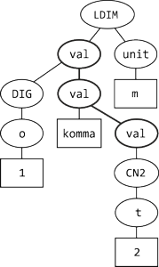

| Class fvrtools |
|
| dLabPro | Identifier | : | fvrtools |
|
| Base class | : | - |
||
| Properties | : | CS_SINGLETON | ||
| Default Instance | : | |||
| Compatibility | : | dLabPro |
||
| C/C++ | Wrapper Class | : |
typedef struct CFvrtools |
|
| Compatibility | : | ANSI-C, ANSI C++ | ||
| General | Author | : | Matthias Wolff, Werner Meyer | |
| Version | : | 1.0.0 | ||
Synopsis
FST-based feature-value relation processing tools
Description
Weighted feature-value relations (wFVRs)[WW14] are a means of representing and processing the meaning of signals. This experimental class handles wFVRs through an FST approximation in the form of trees. Ultimately, wFVR processing is to be realized by weighted Petri net transducers.
Example
Consider the phrase "ein Meter zwanzig" ( "one meter twenty"). The meaning represented as a FVR string [WW14] is:
FVR[
LDIM:0.61[
val:1[
DIG:1[
o:1[
(ein)1:1
] ] ] ][
val:NaN[
komma:NaN
] ][
unit:0.7[
(m)m:0.7
] ][
val:0.36[
CN2:0.36[
t:0.36[
(zwan)2(-zig):0.36
] ] ] ] ]
where the weights were assigned by ASR. The graphical representation of this meaning—with the weights
dropped—would be

References
Class Members
| Fields | Home Top Fields Options Methods C/C++ Errors |
| This class does not have visible fields. | |
| Options | Home Top Fields Options Methods C/C++ Errors |
| This class does not have options. | |
| Methods | Home Top Fields Options Methods C/C++ Errors |
-from_fst | <fst itSeq> <fst itFvr> <fvrtools this> -from_fst Creates a (weighted) FVR from an FST containing a single path. |
-from_string | <string src> <fst itFvr> <fvrtools this> -from_string Creates a (weighted) FVR from a string representation |
-fsg_check | <fst itFsg> <fvrtools this> -fsg_check Check parity of braces of a grammer |
-fsg_normalize | <fst itFsgSrc> <fst itFsgDst> <fvrtools this> -fsg_normalize ... |
-is_fvr | <int nU> <fst itFvr> <fvrtools this> -is_fvr Determines if the argument is an FVR |
-synthesize | <fst itDst> <fst itFvr> <fvrtools this> -synthesize Creates a list of all possible combinations of a FVR |
| C/C++ API | Home Top Fields Options Methods C/C++ Errors |
| (see method list for additional C/C++ functions) | |
CFvrtools_AddToSeq | void CFvrtools_AddToSeq(CFvrtools _this, const char* lpsTok, INT32 nU, CFst* itSeq);Adds a token to a sequence FST. |
CFvrtools_CheckSeq | INT16 CFvrtools_CheckSeq(CFvrtools _this, CFst* itSeq, CData* idS, INT32* pBO, INT32* pBC);Check a sequence FST symbol table. |
CFvrtools_FindIs | FST_STYPE CFvrtools_FindIs(const char* lpsStr, BOOL bAdd, CFst* itFst);Finds a string in an FST's input symbol table. |
CFvrtools_FindOs | FST_STYPE CFvrtools_FindOs(const char* lpsStr, BOOL bAdd, CFst* itFst);Finds a string in an FST's output symbol table. |
CFvrtools_ParseFsgCheck | BOOL CFvrtools_ParseFsgCheck(CFvrtools _this, CFst* itFsg, FST_ITYPE nMyIniState, CData* idVal); |
CFvrtools_ParseSeq | INT16 CFvrtools_ParseSeq(CFvrtools _this, CFst* itSeq, FST_ITYPE nIni, FST_ITYPE nPar, CFst* itFvr);Parses a sequence FST and recursively builds an FVR tree. |
CFvrtools_SeqToFvr | INT16 CFvrtools_SeqToFvr(CFvrtools _this, CFst* itSeq, CFst* itFvr);Creates an FVR tree from a sequence FST. |
CFvrtools_StrToSeq | INT16 CFvrtools_StrToSeq(CFvrtools _this, const char* lpsSrc, CFst* itSeq);Creates a sequence FST from a wFVR string. |
| Errors | Home Top Fields Options Methods C/C++ Errors |
fvrtools1001 | FVR string or sequence syntax error (%s) |
fvrtools1002 | '%s' is not a feature-value relation |
fvrtools1003 | Ignored extra input symbol '%s' at transition %ld |
fvrtools1004 | No input symbol at transition %ld |